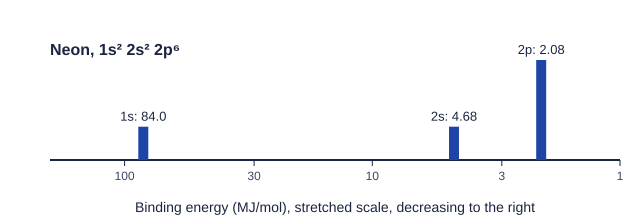

Knocking electrons out with light
The electron configurations on the previous page were a model. Photoelectron spectroscopy (PES) is the experiment that shows the model is right. The idea is simple: shine high-energy light on atoms, knock electrons out, and measure how much energy each electron needed to escape.
Light comes in packets of energy called photons. A photon of high enough energy that hits an atom can transfer its energy to one electron and eject it. Part of the photon's energy is used to free the electron from the atom; the rest leaves with the electron as energy of motion. The instrument knows the photon's energy and measures the energy of motion, so:
energy needed to free the electron = energy of the photon − energy of motion of the ejected electron
The energy needed to remove an electron from its subshell is its binding energy. It is a direct measure of how strongly the nucleus holds that electron. (Unit 3 covers light and the energy of a photon in full.)
Reading a spectrum
A photoelectron spectrum plots the number of electrons ejected against binding energy. Two conventions to know:
- Binding energy usually decreases from left to right, so the most tightly held electrons are on the left.
- Energies are often in MJ/mol (megajoules per mole of atoms), and the axis is often stretched (equal steps for each factor of ten) because the 1s peak is so much higher than the rest.
Every electron in one subshell has the same binding energy, so each subshell gives one peak (Figure 1). Two things are read from each peak:
| Feature | Meaning | Neon example |
|---|---|---|
| Position | binding energy: how tightly the subshell's electrons are held | 1s at 84.0 MJ/mol, far above 2s (4.68) and 2p (2.08) |
| Relative height | number of electrons in the subshell | heights 2, 2 and 6 |
| Number of peaks | number of occupied subshells | 3 peaks: 1s, 2s, 2p |

A common mistake is to treat the tallest peak as the most tightly held. Height counts electrons; position shows the energy.
From a spectrum to a configuration
Worked example. A spectrum has five peaks, at 178, 15.1, 10.3, 1.46 and 0.79 MJ/mol, with relative heights 2, 2, 6, 2, 2. Identify the element.
Read from the highest binding energy, in filling order: 1s (2), 2s (2), 2p (6), 3s (2), 3p (2).
Configuration: 1s² 2s² 2p⁶ 3s² 3p². Total electrons: 2 + 2 + 6 + 2 + 2 = 14, so the element is silicon.
The valence electrons are the 3s and 3p electrons, the two peaks at the lowest binding energies.
The energy needed to remove the most loosely held electron, the right-most peak, is the first ionization energy. Converting units is common: sodium's 3s peak at 0.496 MJ/mol is 0.496 × 1000 = 496 kJ/mol.
Explaining peak positions with Coulomb's law
Every pattern in a photoelectron spectrum follows from Coulomb's law: more charge and less distance mean a stronger attraction and a higher binding energy.
- Inner shells are far to the left. 1s electrons are closest to the nucleus and have no electrons between them and it, so they feel almost the full nuclear charge.
- Within a shell, s is above p. In one atom, 2s electrons are held a bit more tightly than 2p electrons, so the 2s peak sits at slightly higher binding energy.
- The valence peak is on the far right. Outer electrons are farthest away and shielded by every core electron.
Comparing two elements
Comparing the spectra of neighboring elements is a favorite exam task.
Worked example. Sodium (11 protons) has peaks at 104, 6.84, 3.67 and 0.496 MJ/mol. Magnesium (12 protons) has peaks at 126, 9.07, 5.31 and 0.738 MJ/mol. Explain the differences.
Positions: each magnesium peak is at a higher binding energy than the matching sodium peak. The electrons are in the same subshells, at similar distances, but magnesium's nucleus has one more proton, so by Coulomb's law it attracts every subshell more strongly.
Heights: the first three peaks match (2, 2, 6). The 3s peak is twice as tall for magnesium, because Mg is 3s² and Na is 3s¹.
Going one element further, aluminum ([Ne] 3s² 3p¹) shows all of magnesium's peaks, each shifted a little higher, plus a new peak of height 1 for the 3p electron. That new peak appears at the far right, below the 3s peak, because a 3p electron is held less tightly than a 3s electron.
What to write on the exam
When asked to explain a difference in peak position, name the cause and both species: "Mg has 12 protons and Na has 11; the 1s electrons in both are at about the same distance from the nucleus, so the greater nuclear charge of Mg attracts them more strongly, giving a higher binding energy." When asked about height, say it is proportional to the number of electrons in that subshell.